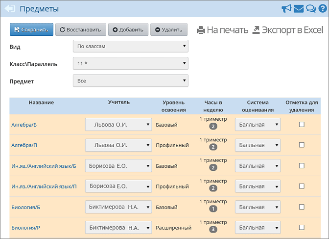
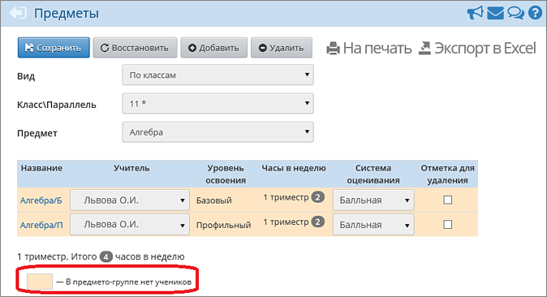

|
Работа с предметами для ИУП
|

| · | Название предмето-группы: к названию предмета автоматически была добавлена одна буква (Б, П, У или Р). После названия предмета можно указать любую строку до 20 символов; либо вообще стереть эту добавленную букву, чтобы название группы совпадало с названием предмета (что актуально, например, для элективных курсов).
|
| · | Учителя, ведущего данную предмето-группу: по умолчанию был назначен первый по алфавиту учитель для данного предмета.
|
| · | Систему оценивания для предмето-группы: балльная (по умолчанию) или зачёт-незачёт.
|
